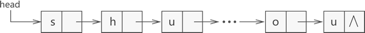
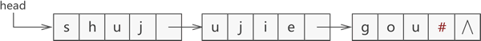
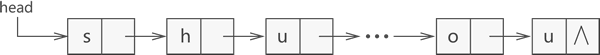
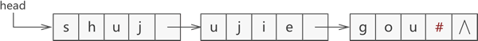

串的块链存储结构
串的块链存储，指的是使用链表结构存储字符串。
本节实现串的块链存储使用的是无头节点的单链表。当然根据实际需要，你也可以自行决定所用链表的结构（双向链表还是单链表，有无头节点）。
我们知道，单链表中的 "单" 强调的仅仅是链表各个节点只能有一个指针，并没有限制数据域中存储数据的具体个数。因此在设计链表节点的结构时，可以令各节点存储多个数据。
例如，图 1 所示是用链表存储字符串

图 1 各节点仅存储 1 个数据元素的链表
同样，图 2 设置的链表各节点可存储 4 个字符：

图 2 各节点可存储 4 个数据元素的链表
从图 2 可以看到，使用链表存储字符串，其最后一个节点的数据域不一定会被字符串全部占满，对于这种情况，通常会用 '#' 或其他特殊字符（能与字符串区分开就行）将最后一个节点填满。
初学者可能会问，使用块链结构存储字符串时，怎样确定链表中节点存储数据的个数呢？
链表各节点存储数据个数的多少可参考以下几个因素：
以上两点仅是目前想到影响节点存储数据个数的因素，在实际场景中，还需结合实现环境综合分析。
这里给出一个实现串的块链存储的 C 语言程序，以加深初学者对此字符串存储方式的认识：
本节实现串的块链存储使用的是无头节点的单链表。当然根据实际需要，你也可以自行决定所用链表的结构（双向链表还是单链表，有无头节点）。
我们知道，单链表中的 "单" 强调的仅仅是链表各个节点只能有一个指针，并没有限制数据域中存储数据的具体个数。因此在设计链表节点的结构时，可以令各节点存储多个数据。
例如，图 1 所示是用链表存储字符串
shujujiegou，该链表各个节点中可存储 1 个字符：

图 1 各节点仅存储 1 个数据元素的链表
同样，图 2 设置的链表各节点可存储 4 个字符：

图 2 各节点可存储 4 个数据元素的链表
从图 2 可以看到，使用链表存储字符串，其最后一个节点的数据域不一定会被字符串全部占满，对于这种情况，通常会用 '#' 或其他特殊字符（能与字符串区分开就行）将最后一个节点填满。
初学者可能会问，使用块链结构存储字符串时，怎样确定链表中节点存储数据的个数呢？
链表各节点存储数据个数的多少可参考以下几个因素：
- 串的长度和存储空间的大小：若串包含数据量很大，且链表申请的存储空间有限，此时应尽可能的让各节点存储更多的数据，提高空间的利用率（每多一个节点，就要多申请一个指针域的空间）；反之，如果串不是特别长，或者存储空间足够，就需要再结合其他因素综合考虑；
- 程序实现的功能：如果实际场景中需要对存储的串做大量的插入或删除操作，则应尽可能减少各节点存储数据的数量；反之，就需要再结合其他因素。
以上两点仅是目前想到影响节点存储数据个数的因素，在实际场景中，还需结合实现环境综合分析。
这里给出一个实现串的块链存储的 C 语言程序，以加深初学者对此字符串存储方式的认识：
#include<stdio.h>
#include<stdlib.h>
#include<string.h>
#define linkNum 3//全局设置链表中节点存储数据的个数
typedef struct Link {
char a[linkNum]; //数据域可存放 linkNum 个数据
struct Link * next; //代表指针域，指向直接后继元素
}link; // nk为节点名，每个节点都是一个 link 结构体
link * initLink(link * head, char * str);
void displayLink(link * head);
int main()
{
link * head = NULL;
head = initLink(head, "data.biancheng.net");
displayLink(head);
return 0;
}
//初始化链表，其中head为头指针，str为存储的字符串
link * initLink(link * head, char * str) {
int length = strlen(str);
//根据字符串的长度，计算出链表中使用节点的个数
int num = length/linkNum;
if (length%linkNum) {
num++;
}
//创建并初始化首元节点
head = (link*)malloc(sizeof(link));
head->next = NULL;
link *temp = head;
//初始化链表
for (int i = 0; i<num; i++)
{
int j = 0;
for (; j<linkNum; j++)
{
if (i*linkNum + j < length) {
temp->a[j] = str[i*linkNum + j];
}
else
temp->a[j] = '#';
}
if (i*linkNum + j < length)
{
link * newlink = (link*)malloc(sizeof(link));
newlink->next = NULL;
temp->next = newlink;
temp = newlink;
}
}
return head;
}
//输出链表
void displayLink(link * head) {
link * temp = head;
while (temp) {
for (int i = 0; i < linkNum; i++) {
printf("%c", temp->a[i]);
}
temp = temp->next;
}
}
程序输出结果为：
data.biancheng.net
关注公众号「站长严长生」，在手机上阅读所有教程，随时随地都能学习。内含一款搜索神器，免费下载全网书籍和视频。

微信扫码关注公众号